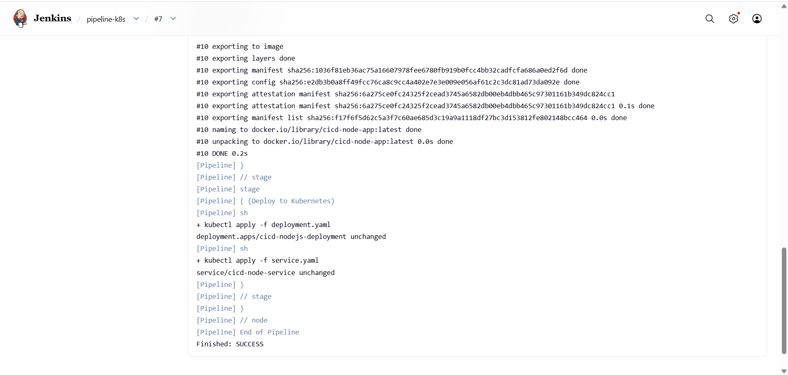
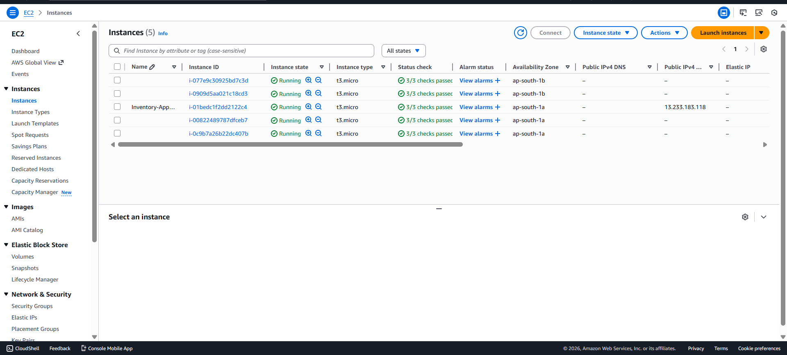
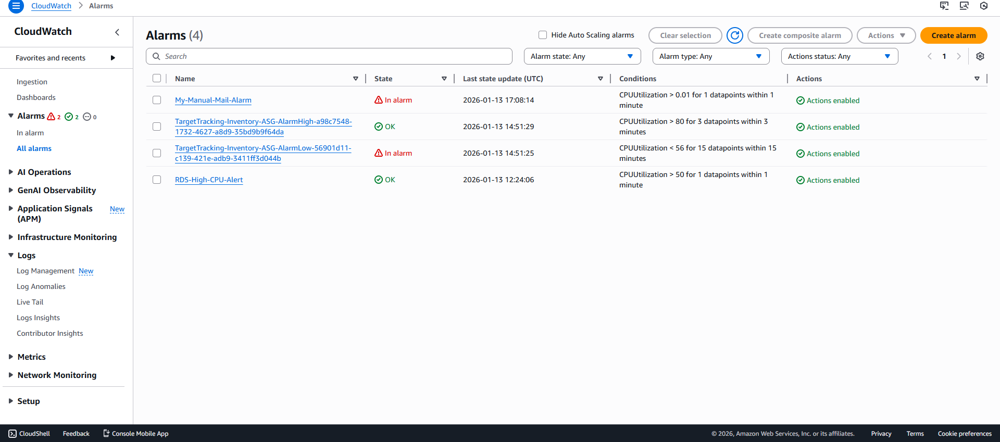
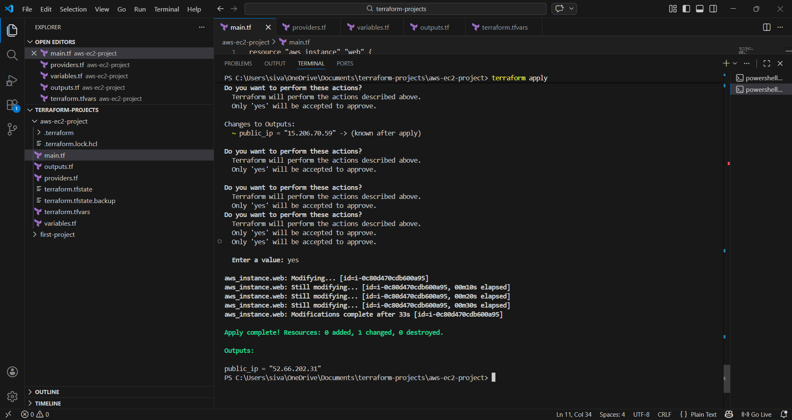
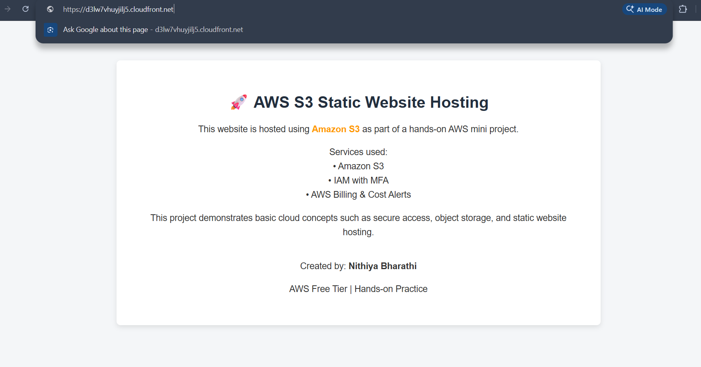

Cloud & Networking
AWS (EC2, S3, VPC, ALB, Auto Scaling, RDS). VPC design with public/private subnets and Security Groups.
DevOps & Cloud Enthusiast | MCA Graduate 2025
Cloud and DevOps Enthusiast with hands-on foundational experience in AWS cloud services, Docker containerization, and CI/CD concepts. Skilled in deploying scalable applications on AWS using EC2, VPC, Auto Scaling, and CloudWatch. Currently strengthening practical skills in Infrastructure as Code using Terraform.

AWS (EC2, S3, VPC, ALB, Auto Scaling, RDS). VPC design with public/private subnets and Security Groups.
Docker, Docker Compose, Kubernetes (K8s) basics, and Jenkins for CI/CD automation.
Git, GitHub for collaborative workflows. Learning Infrastructure as Code using Terraform.
Linux (file systems, permissions). Basic Bash scripting and Python fundamentals.

Impact: Integrated Jenkins with Kubernetes to automate application orchestration. Used Docker for containerization and GitHub Actions for seamless delivery.

Impact: Deployed a highly available app using ALB and Auto Scaling. Configured CloudWatch Alarms to proactively monitor infrastructure health.


Impact: Automated multi-tier AWS infrastructure provisioning using Terraform. Managed resource lifecycles and state files for consistent deployments.

Impact: Hosted a static website on S3 with Amazon CloudFront for global content delivery (CDN). Secured the connection with HTTPS/SSL protocol.